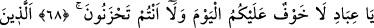
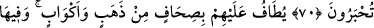
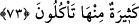

İŞTE CENNET BUDUR
68. (Birbirine dost o müttakilere Âlemlerin Rabbi şöyle hitâbeder): Ey kullarım!
Bugün size korku yoktur. Sizler üzülmeyeceksiniz de.
69. (Ey o) âyetlerimize inanan ve müslüman olan kullarım!
70. Siz ve eşleriniz, ağırlanmış olarak cennete giriniz!
71. Onlara altın tepsiler ve kadehler dolaştırılır. Orada canlarının istediği,
gözlerinin hoşlandığı her şey vardır. Ve kendilerine: Siz, orada ebedî kalacaksınız
(denir.)
72. İşte yaptıklarınıza karşılık size miras verilen cennet budur.
73. Orada sizin için bol bol meyveler vardır, onlardan yersiniz, denilir.
“Ey” mümin ve müttakî “kullarım! Bugün size” hoşlanmayacağınız şeylerin
dokunması gibi bir “korku yoktur ve sizler” maksud ve matlûbunuza ulaşamamakla
müttaki olmayanların üzüldüğü gibi “üzülmeyeceksiniz de.”
Allah lafzına muzaf olan “ibâd” kelimesinden murad, Allah’ın mümin ve müttakî
kullarıdır. Gönüllerini hoş edip onları şereflendirmek için kıyâmet günü müttakî kullara
böyle hitap edilecektir.
İbn Atâ şöyle demiştir: Bugün size dünyada îmandan ayrılmak gibi bir korku, âhirette
ise Mevlâ’dan uzak olmak gibi bir üzüntü yoktur. Çünkü Yüce Allah, has ve hâlis
kullarını dünya ve âhiret kurtuluşu ile müjdelemektedir. Allah Teâlâ şöyle buyurur:
“Onlara dünyada da, âhirette de müjde vardır.” (Yûnus, 10/64) Fakat onlar, bu
durumu gizlemekle memurdurlar. Zîrâ onların kurtuluşunu kendilerinin bilmesi
yeterlidir. Başkalarının bilmesine hâcet yoktur.
et-Te’vilâtü’n-Necmiyye’de belirtildiğine göre âyette şuna işâret edilmektedir: Allah
Teâlâ hangi kulunu diğer yaratıkların boyunduruğundan kurtarır ve dünyada kendi zâtına
kulluk şerefiyle şereflendirirse, kıyâmet günü onu Allah’ın cemâlini görmekten men
edecek bir korku yoktur. Yine bu kişi dünya ve âhirete dâir herhangi bir nimet kaybından
ötürü de üzülmeyecek, Allah’ın lutuf ve mârifet denizlerinde kaybolup ebedi mutluluk